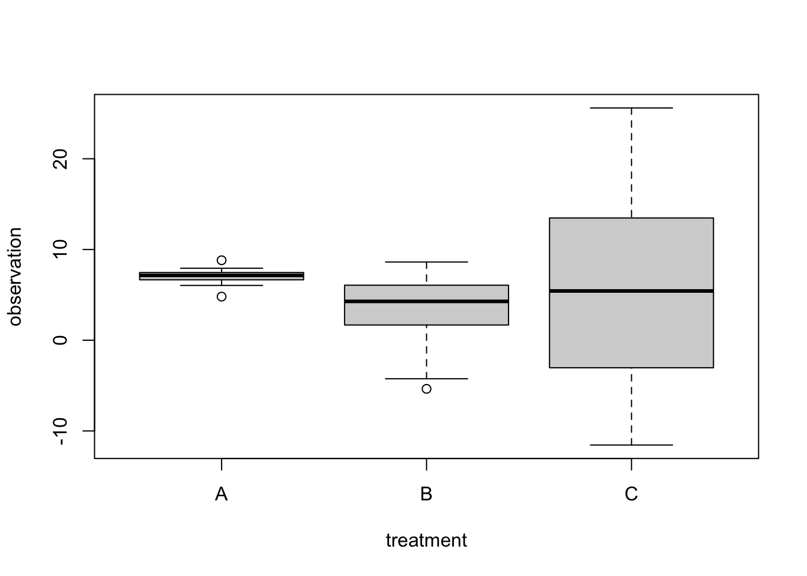
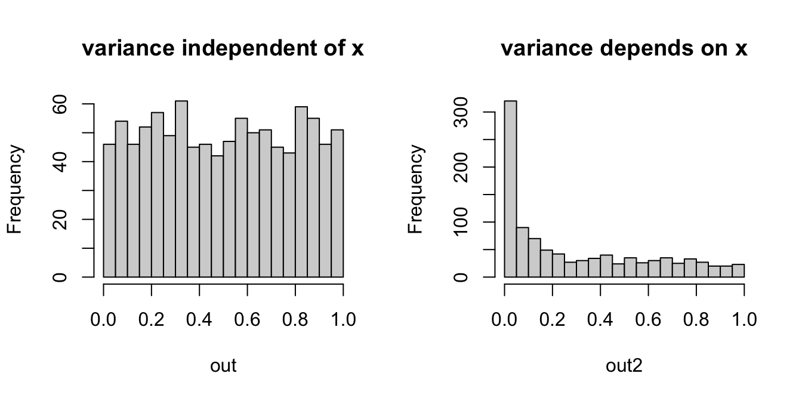
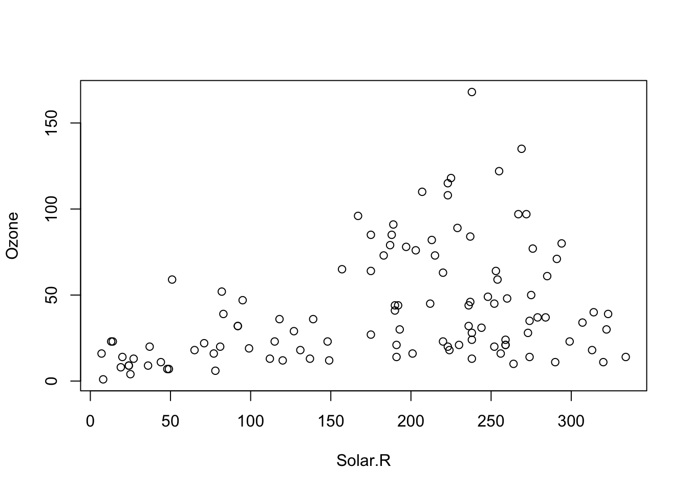
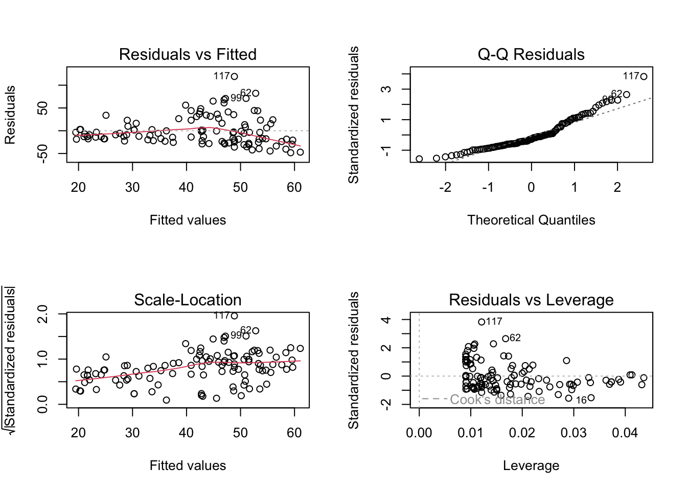
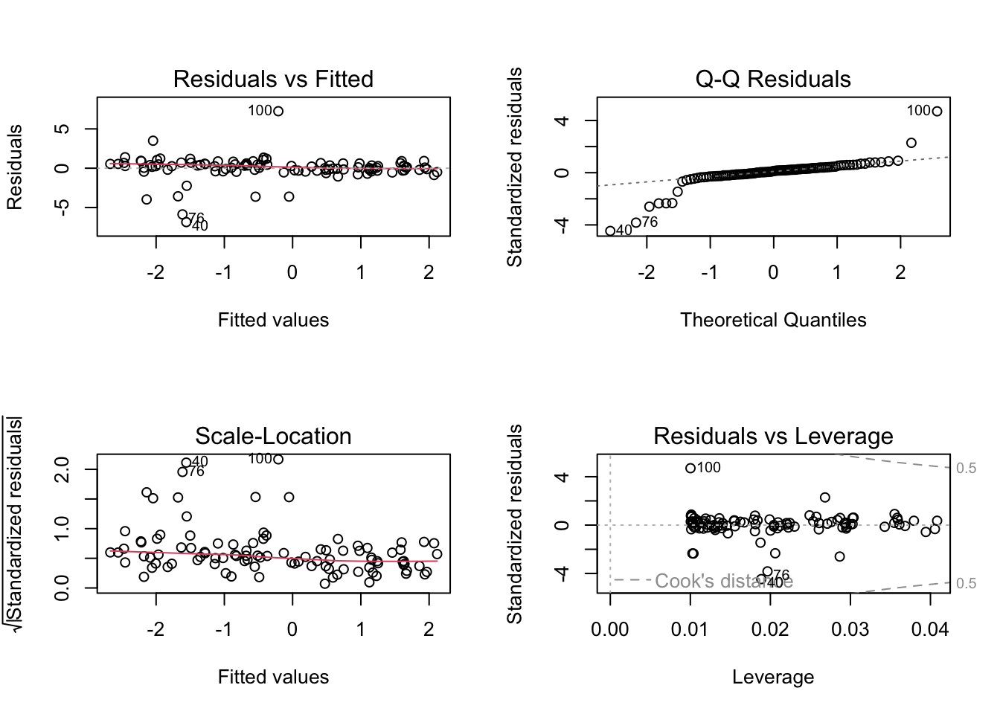

why heteroskedasticity makes p-values of the linear model and ANOVA unreliable, and how to fix it by a transformation or by modeling the variance with gls or glmmTMB (Section 10.1);
how to model a variable dispersion in GLMMs (Section 10.2);
what to do about outliers and non-normal residuals: robust and quantile regression (Section 10.3).
Prerequisites: the linear model and its residual checks (Chapter 2), GLMMs (Chapter 9) for the second part.
Modeling dispersion means that we describe how the expected variance changes as a function of the mean or predictor variables. The residual problem that we address by that is known as heteroskedasticity (see Section 2.5.1 and Section 2.4.1).
10.1 Heteroskedasticity in the linear model
Heteroskedasticity means that the residual variance is not constant, for example because it depends on a predictor or on the mean. The easiest way to understand it is in the linear model. Let’s look at an extreme example that we create by simulating some data
set.seed(125)data =data.frame(treatment =factor(rep(c("A", "B", "C"), each =15)))data$observation =c(7, 2 ,4)[as.numeric(data$treatment)] +rnorm( length(data$treatment), sd =as.numeric(data$treatment)^2 )boxplot(observation ~ treatment, data = data)

Especially p-values and confidence intervals of lm() and ANOVA can react quite strongly to such differences in residual variation. So, running a standard lm() / ANOVA on this data is not a good idea - in this case, we see that no regression effect is significant, and neither is the ANOVA (p = 0.27), although the true group means differ (7, 2, 4, we simulated them). The unequal residual variances distort the standard errors and p-values (here they cost us power); let’s see what happens when we model the variances.
fit =lm(observation ~ treatment, data = data)summary(fit)
Call:
lm(formula = observation ~ treatment, data = data)
Residuals:
Min 1Q Median 3Q Max
-17.2897 -1.0514 0.3531 2.4465 19.8602
Coefficients:
Estimate Std. Error t value Pr(>|t|)
(Intercept) 7.043 1.731 4.069 0.000204 ***
treatmentB -3.925 2.448 -1.603 0.116338
treatmentC -1.302 2.448 -0.532 0.597601
---
Signif. codes: 0 '***' 0.001 '**' 0.01 '*' 0.05 '.' 0.1 ' ' 1
Residual standard error: 6.704 on 42 degrees of freedom
Multiple R-squared: 0.05973, Adjusted R-squared: 0.01495
F-statistic: 1.334 on 2 and 42 DF, p-value: 0.2744
summary(aov(fit))
Df Sum Sq Mean Sq F value Pr(>F)
treatment 2 119.9 59.95 1.334 0.274
Residuals 42 1887.6 44.94
Note
A subtlety about heteroskedasticity in the normal model is that it especially affects p-values when the residual variance changes with the predictor itself, as illustrated by the simulation below (no true effect, so p-values should be uniform)
par(mfrow =c(1, 2))# error sd is variable, but uncorrelated with predictorgetP <-function(effect =0, n =1000){ sd =rgamma(n, shape =2)#hist(sd) x =runif(n) y = effect * x +rnorm(n, sd = sd) fit <-lm(y ~ x) table <-summary(fit)return(table$coefficients[2,4])}out =replicate(1000, getP())hist(out, breaks =20, main ="variance independent of x")# error sd is variable and correlated with predictor (identical in this case)getP2 <-function(effect =0, n =1000){ sd =rgamma(n, shape =2) y = effect * sd +rnorm(n, sd = sd) fit <-lm(y ~ sd) table <-summary(fit)return(table$coefficients[2,4])}out2 =replicate(1000, getP2())hist(out2, breaks =20, main ="variance depends on x")

Left: the p-values are uniform under H0, i.e. calibrated (about 5% false positives at alpha = 0.05). Right: strong excess of small p-values (here about 30% false positives): inflated type I error.
So, what can we do?
10.1.1 Transformation
One option is to search for a transformation of the response that improves the problem - If heteroskedasticity correlates with the mean value, one can typically decrease it by some sqrt or log transformation, but this is often difficult, because this may also conflict with keeping the distribution normal.
10.1.2 Modeling the variance / dispersion
The second, more general option is to model the variance, i.e. to fit a model in which the variance is not fixed. We will discuss two packages in R that allow you to model the dispersion.
The first (traditional) option is to use nlme::gls. GLS = Generalized Least Squares (not to be confused with GLMs, Chapter 9: GLS keeps the normal distribution, but allows non-constant variance and correlated errors). In the gls function, you can specify a dependency of the residual variance on a predictor or the response via the weights argument. There are different types of dependencies that you can specify, see ?varFunc. In our case, we will use the varIdent function, which allows you to specify a different variance per treatment.
The second option for modeling variances is to use the glmmTMB package. Here, you can specify an extra regression formula for the dispersion. For the Gaussian family, this formula models the residual standard deviation on the log scale. If we fit this:
library(glmmTMB)fit =glmmTMB(observation ~ treatment, data = data, dispformula =~ treatment)summary(fit)
We get 2 regression tables as outputs - one for the effects, and one for the dispersion. We see, as expected, that the dispersion is higher in groups B and C compared to A: for the Gaussian family the dispersion formula models the residual standard deviation on the log scale, so exp(1.55) = 4.7 means that the SD in B is about 4.7 times that in A. gls reports the same quantities as SD ratios relative to A (4.7 for B and 11.8 for C, with confidence intervals from intervals() on the gls fit), whereas glmmTMB additionally gives z-tests and p-values for these differences.
CautionExercise — Variance modeling
Take this plot of Ozone ~ Solar.R using the airquality data. Clearly there is heteroskedasticity in the relationship:
plot(Ozone ~ Solar.R, data = airquality)

We can also see this when we fit the regression model:
m1 =lm(Ozone ~ Solar.R, data = airquality)par(mfrow =c(2, 2))plot(m1)

We could of course consider other predictors, but let’s say we want to fit this model specifically
Try to get the variance stable with a transformation.
Use the gls function (package nlme) with the untransformed response to make the variance dependent on Solar.R. Hint: Read in varClasses and decide how to model this.
m4 =glmmTMB(Ozone ~ Solar.R, dispformula =~Solar.R, data = airquality)
10.2 Heteroskedasticity in GLMMs
GLM(M)s can be heteroskedastic as well, i.e. dispersion depends on some predictors. This is the same idea as the dispersion problems in GLMs (Section 9.3.2): the variance is not what the distribution assumes, but here we model it explicitly. In glmmTMB, you can make the dispersion of the negative Binomial dependent on a formula via the dispformula argument, analogous to the variance modeling with gls and glmmTMB for the linear model (Section 10.1.2).
Variance problems would show up when plotting residuals against predicted and predictors (see Section 9.3.1). In the section on recognizing overdispersion (Section 9.3.2.1), we saw some variance problems in the Salamander model. We could add a variable dispersion model via
m3 =glmmTMB(count ~ spp + mined + (1|site), family = nbinom1,dispformula =~ spp + mined , data = Salamanders)summary(m3)
10.3 Excursion: outliers, robust and quantile regression
What can we do if, after accounting for the functional form (Section 2.5), response transformation (Section 10.1.1) and variance modeling (Section 10.1.2), the Q-Q plot of the residuals (Section 2.4.1) still shows non-normality, in particular strong outliers? Here simulated example data with strong outliers / deviations from normality:
Fitting the model, we see that the distribution is too wide:
fit =lm(growth ~ concentration)par(mfrow =c(2, 2))plot(fit)

What can we do to deal with such distributional problems and outliers?
Removing - Bad option, hard to defend, reviewers don’t like this - if at all, better show robustness with and without outlier, but result is sometimes not robust.
Change the distribution - Fit a model with a different distribution, i.e. GLM (Chapter 9) or other.
Robust regressions.
Quantile regression - A special type of regression that does not assume a particular residual distribution.
10.3.1 Robust regression
Robust methods generally refer to methods that are robust to violation of assumptions, e.g. outliers. More specifically, standard robust regressions typically downweight data points that have a too high influence on the fit. See https://cran.r-project.org/web/views/Robust.html for a list of robust packages in R.
# This is the classic method.library(MASS)fit =rlm(growth ~ concentration) summary(fit)
Call: rlm(formula = growth ~ concentration)
Residuals:
Min 1Q Median 3Q Max
-7.1986 -0.3724 0.0377 0.3391 7.0902
Coefficients:
Value Std. Error t value
(Intercept) -0.0978 0.0594 -1.6453
concentration 2.0724 0.1048 19.7721
Residual standard error: 0.534 on 98 degrees of freedom
# No p-values and not sure if we can trust the confidence intervals.# Would need to bootstrap by hand!# This is another option that gives us p-values directly.library(robustbase)fit =lmrob(growth ~ concentration) summary(fit)
Call:
lmrob(formula = growth ~ concentration)
\--> method = "MM"
Residuals:
Min 1Q Median 3Q Max
-7.2877 -0.4311 -0.0654 0.2788 7.0384
Coefficients:
Estimate Std. Error t value Pr(>|t|)
(Intercept) -0.04448 0.05160 -0.862 0.391
concentration 2.00588 0.08731 22.974 <2e-16 ***
---
Signif. codes: 0 '***' 0.001 '**' 0.01 '*' 0.05 '.' 0.1 ' ' 1
Robust residual standard error: 0.5549
Multiple R-squared: 0.8431, Adjusted R-squared: 0.8415
Convergence in 7 IRWLS iterations
Robustness weights:
9 observations c(27,40,47,52,56,76,80,91,100)
are outliers with |weight| = 0 ( < 0.001);
5 weights are ~= 1. The remaining 86 ones are summarized as
Min. 1st Qu. Median Mean 3rd Qu. Max.
0.6673 0.9015 0.9703 0.9318 0.9914 0.9989
Algorithmic parameters:
tuning.chi bb tuning.psi refine.tol
1.548e+00 5.000e-01 4.685e+00 1.000e-07
rel.tol scale.tol solve.tol zero.tol
1.000e-07 1.000e-10 1.000e-07 1.000e-10
eps.outlier eps.x warn.limit.reject warn.limit.meanrw
1.000e-03 1.819e-12 5.000e-01 5.000e-01
nResample max.it best.r.s k.fast.s k.max
500 50 2 1 200
maxit.scale trace.lev mts compute.rd fast.s.large.n
200 0 1000 0 2000
psi subsampling cov
"bisquare" "nonsingular" ".vcov.avar1"
compute.outlier.stats
"SM"
seed : int(0)
10.3.2 Quantile regression
Quantile regressions don’t fit a line with an error spreading around it, but try to fit a quantile (e.g. the 0.5 quantile, the median) regardless of the distribution. Thus, they do not assume a particular residual distribution or constant variance, but functional form and independence still matter, and the median is not the mean.
Check the residuals against the predicted values and against each predictor. With heteroskedasticity, p-values and confidence intervals of lm() and ANOVA can be badly wrong, mainly for the predictor the variance is related to; in our example, a non-significant ANOVA became significant once the variance was modeled.
A transformation (e.g. sqrt or log) can remove the problem, but may conflict with normality. The more general solution is to model the variance: gls with varIdent or varPower, or glmmTMB with dispformula. For the Gaussian family, dispformula models the residual standard deviation on the log scale.
In GLMMs, the dispersion can also depend on predictors (dispformula, e.g. with the negative binomial). Check again with simulated residuals plotted against the predictors.
Do not simply remove outliers; if you do, show the results with and without them. Better: change the distribution, or use robust or quantile regression.
Quantile regression assumes no particular residual distribution, but the functional form and independence still matter, and a median regression describes the median, not the mean.